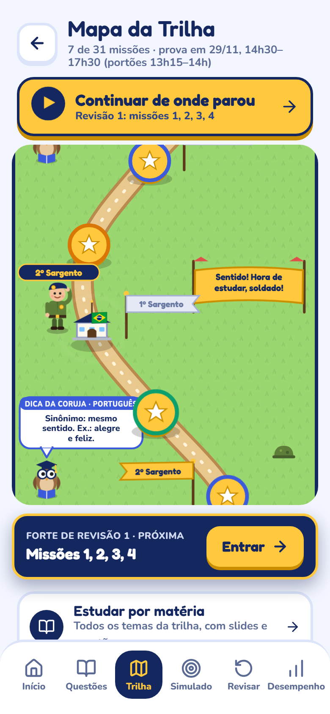
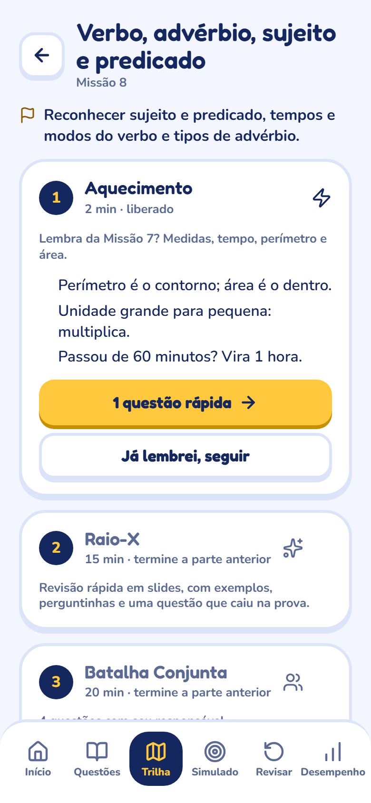
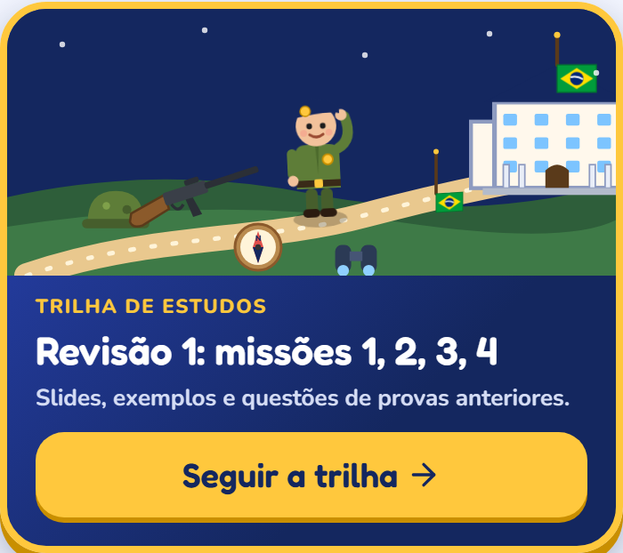
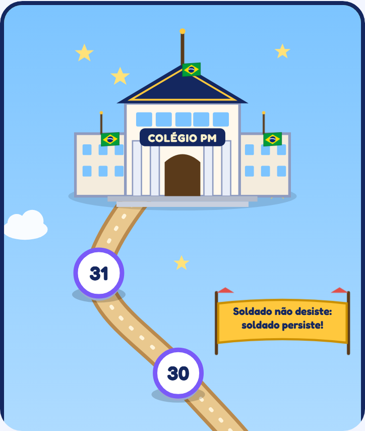
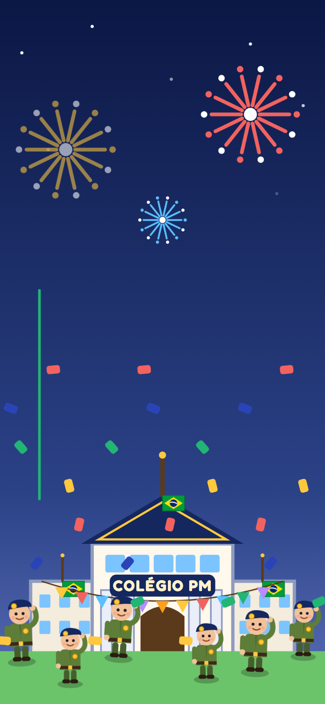

Conteúdo espalhado
Apostilas, vídeos e listas soltas. Ninguém diz o que cai na prova nem em que ordem estudar.
Uma trilha de estudos em forma de jogo, com questões reais de provas anteriores. Seu filho cumpre missões no mapa e sobe de patente, de Soldado a Coronel. Você acompanha e ajusta tudo pela área dos pais.

Apostilas, vídeos e listas soltas. Ninguém diz o que cai na prova nem em que ordem estudar.
Aos 10 ou 11 anos, sentar para estudar todo dia é difícil. Sem rotina, o estudo vira briga em casa.
Você só descobre se o filho está pronto no dia do resultado. Até lá, fica no escuro.
O conteúdo da prova vira um caminho com 31 missões, uma matéria de cada vez, alternando para não cansar. O soldadinho anda pelo mapa a cada missão cumprida, passando por colégios de revisão com a bandeira do Brasil, até chegar ao grande Colégio PM.

A cada poucas missões, um colégio de revisão retoma o que foi estudado, com as questões que a criança errou primeiro.
A coruja professora dá dicas das matérias (“Proparoxítona sempre tem acento”) e o sargento lembra as regras de prova (“Atenção ao NÃO e ao EXCETO”). As falas mudam todos os dias.
O app volta exatamente ao slide ou à questão em que a criança parou, em qualquer aparelho.


Cada patente pede missões da trilha e questões respondidas. No meio do caminho vêm as estrelas. A cada promoção, uma festa no colégio, com fogos e a tropa comemorando.

Cadastre a data da prova e o app recomenda o tipo de trilha pelo tempo que falta. Prazo maior, trilha mais completa; prazo menor, mais resumida. A escolha é sua, e dá para trocar depois sem perder nada.
Exemplo ilustrativo com dados fictícios.
Quase 250 questões das provas de 2018/19 a 2025/26, com gabarito e explicação de cada alternativa.
Oito cadernos do 6º ano com as páginas originais, para fazer como simulado.
Português, Matemática, Ciências, Geografia e História, com temas organizados.
A criança risca alternativas e marca dúvida, como no papel. Você vê como ela pensou.
As erradas voltam para refazer, até acertar.
Celular, tablet ou computador, com a mesma conta. Instala como app e funciona até sem internet.
Errou? O app mostra por que a certa é certa, por que cada errada não é, e a pegadinha da questão.
Uma turma tem 32 alunos. 3/8 deles são meninas. Quantos meninos há na turma?
3/8 de 32 = 12 meninas. Meninos: 32 − 12 = 20. Pegadinha: a alternativa A é o número de meninas.
Para experimentar com calma.
R$ 39,90 /mês
12 meses de acesso: cobre a preparação inteira.
12× R$ 24,90
ou R$ 298,80 à vista
Preços de lançamento previstos. As assinaturas abrem em breve: entre na lista e avisamos você primeiro.
Para o processo seletivo de ingresso no 6º ano dos Colégios da Polícia Militar do Paraná. A trilha cobre as cinco matérias: Português, Matemática, Ciências, Geografia e História.
Sim. São questões de oito edições anteriores (2018/19 a 2025/26), com gabarito e explicação. A trilha usa primeiro essas questões reais e completa com questões inéditas no mesmo estilo.
Sim. O app foi feito para crianças de 10 e 11 anos: linguagem simples, mapa, personagens e patentes. A Batalha Conjunta de cada missão é para fazer com você, com roteiro pronto.
Uma missão completa leva cerca de 1 hora, em 4 partes que podem ser feitas em momentos diferentes. Você define as metas do dia e os dias de estudo na área dos pais.
Sim, com a mesma conta. O progresso aparece em qualquer aparelho, e dá para instalar como aplicativo e estudar até sem internet.
Sim. Cada filho tem seu acesso, ligado à sua conta, e você escolhe quem acompanhar no topo da área dos pais.
Não. O CPM-PRO é um app independente de preparação para o vestibulinho e não tem ligação com a PMPR nem com os Colégios da Polícia Militar.
Entre na lista e seja avisado quando as assinaturas abrirem.
Lista de espera abrindo em breve.